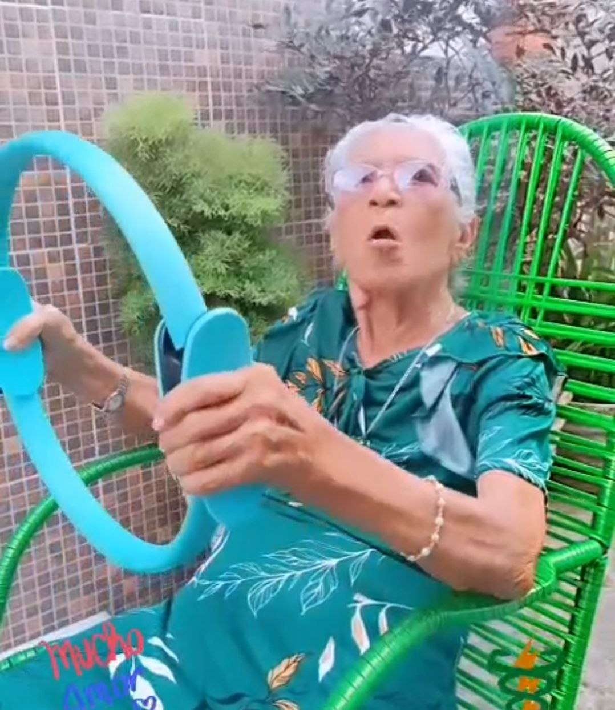
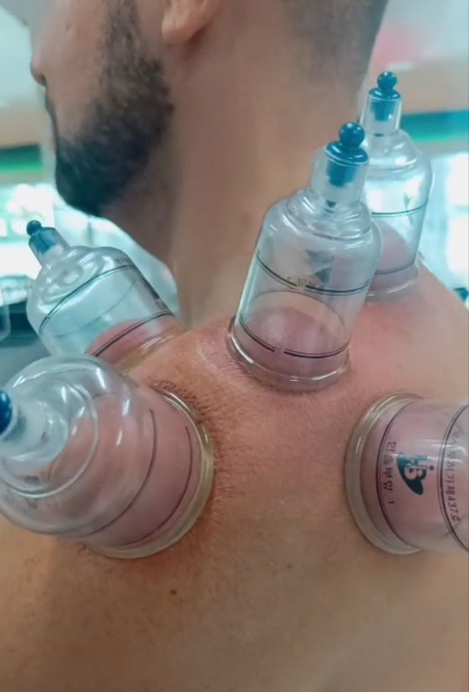

Levo cuidado profissional e um sorriso de verdade para dentro da sua casa. Você se recupera no seu próprio ritmo, no lugar onde se sente melhor.
Um pouco do dia a dia dos atendimentos, direto de uma sessão.
Conte um pouco sobre sua dor ou necessidade e combinamos juntos o melhor horário.
Chego com todo o equipamento necessário, prontinha para o seu atendimento em casa.
Sessões leves e alegres, no ambiente onde você já se sente à vontade.
Atuação em ortopedia clínica com foco em reabilitação, prevenção e promoção da saúde. Especialista em terapia intensiva, instrutora de Pilates e formada em dry needling, auriculoterapia e ventosaterapia.
Conhecer a Darcilene“Cuidar do movimento é transformar vidas!”


Tratamento de dores, lesões e pós-operatórios, com todo o equipamento levado até a sua casa.
Saiba mais →Fortalecimento, postura e reabilitação em sessões individuais, no seu próprio espaço.
Saiba mais →Ventosas para soltar a musculatura tensionada, aliviar dor e melhorar a circulação local.
Saiba mais →"Cheguei sem conseguir subir escadas sem dor. Hoje já voltei a caminhar todos os dias — sem sair de casa para os atendimentos!"
"O pilates clínico em casa mudou minha postura e a dor nas costas praticamente sumiu. E as sessões são super leves e divertidas!"
"Minha mãe está mais firme e confiante para andar sozinha, e adora a visita da Darcilene toda semana. Gratidão enorme!"
Chame agora e marque sua primeira visita domiciliar.
Agendar no WhatsApp